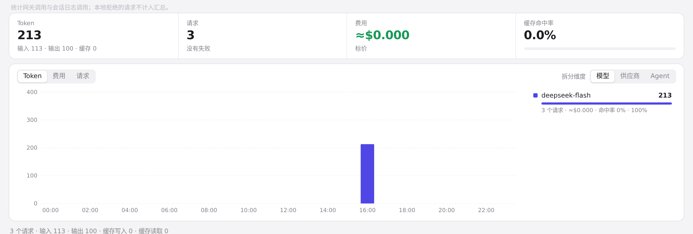
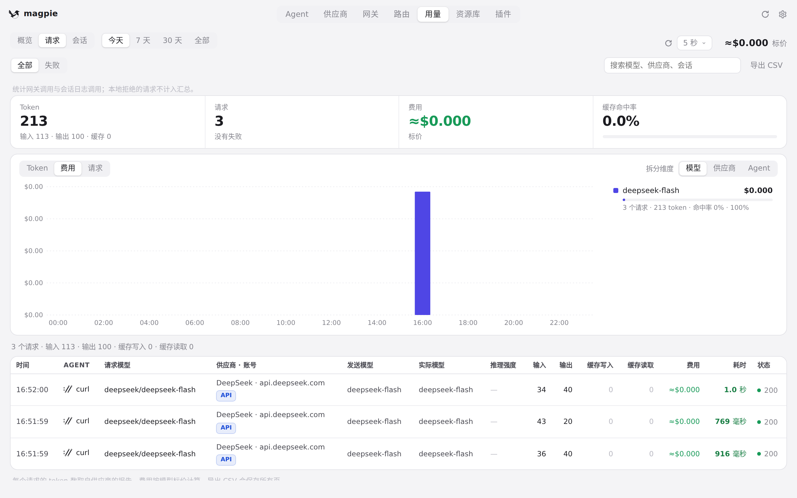
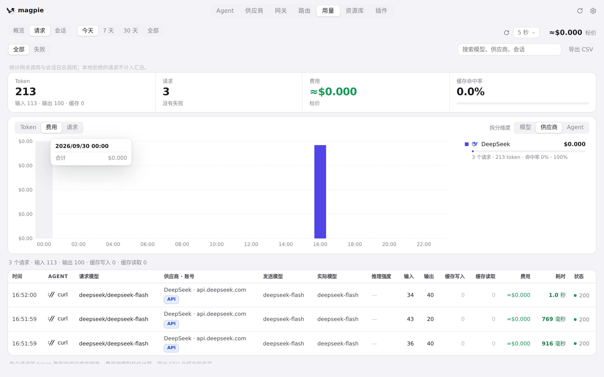
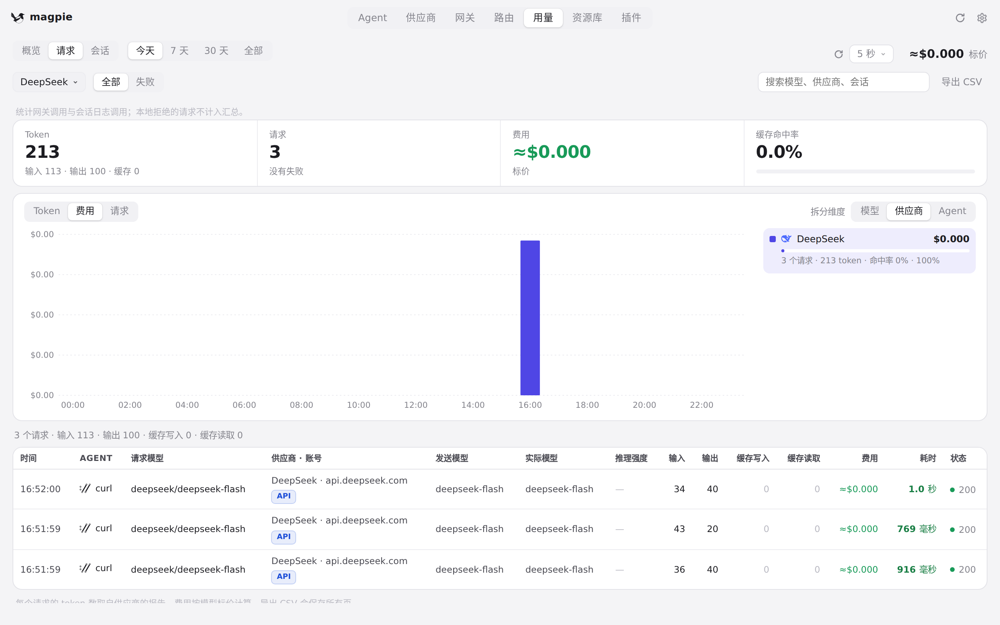
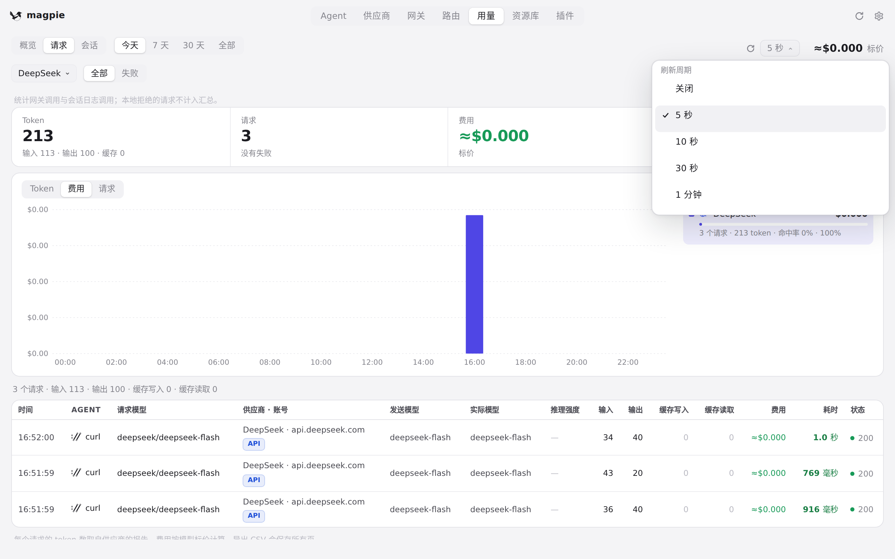
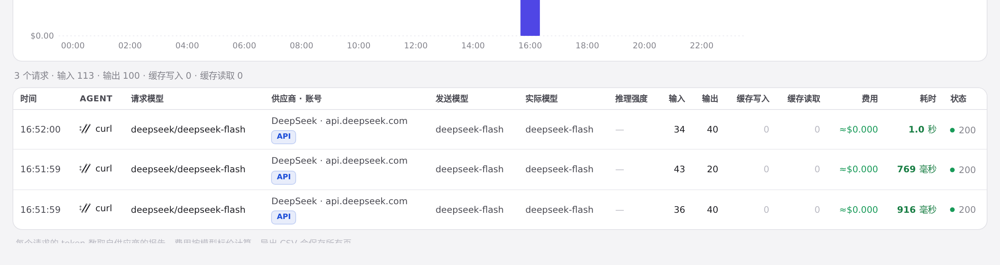
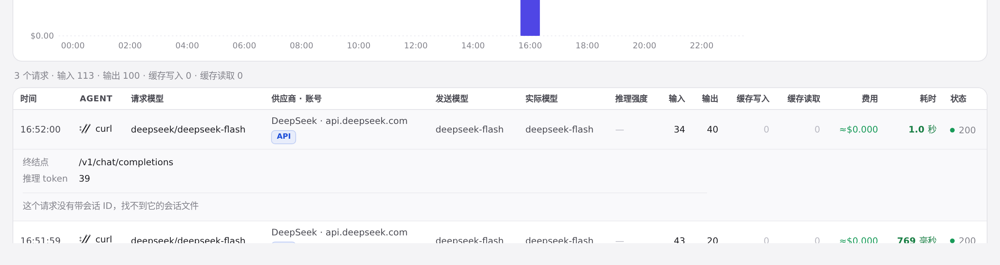
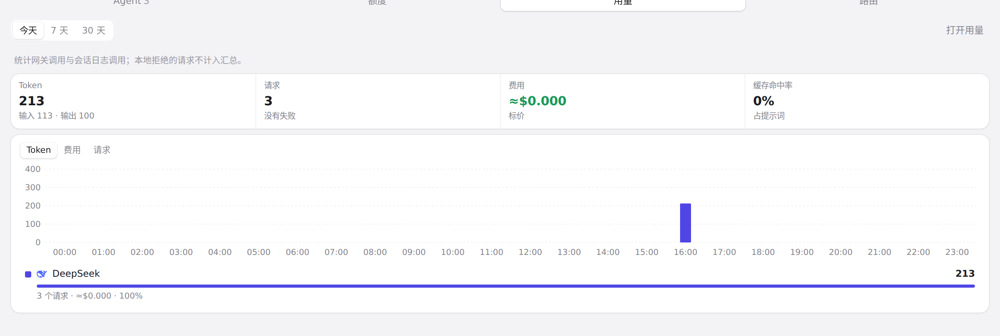
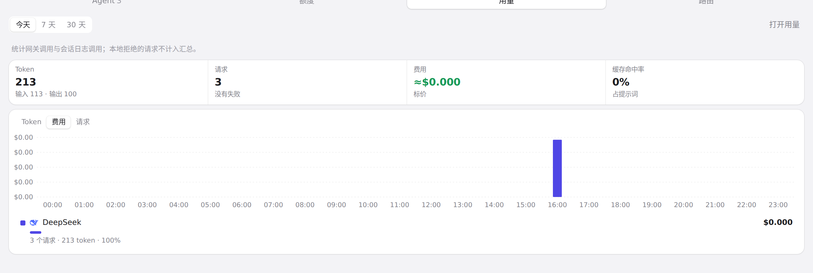
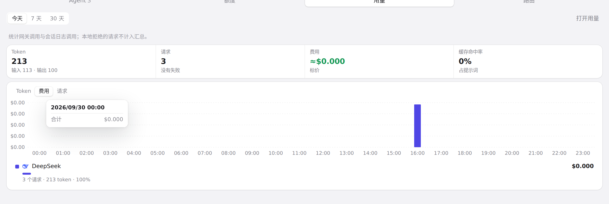

#239 界面预览
commit 52e4de7 · 回到 PR · 用量页的「请求」标签新增四项汇总条、按 Token／费用／请求数与按模型／供应商／Agent 拆分的趋势图和排行、供应商筛选、可展开的请求详情（请求 ID、端点、错误类型、读自会话文件的内容），头部新增刷新周期与立即刷新；托盘面板新增「用量」标签，用同一口径显示汇总、紧凑图表和排行。
红线是鼠标走过的轨迹，红色圆环是一次点击；底部文字是这一步在做什么。空格暂停，← → 逐段查看。

用量页「请求」的总览、图表与刷新周期 · 请求页顶部的汇总条、趋势图与排行

用量页「请求」的总览、图表与刷新周期 · 指标为费用时的趋势图与排行
用量页「请求」的总览、图表与刷新周期 · 按供应商拆分的趋势图与排行

用量页「请求」的总览、图表与刷新周期 · 悬停时列上出现的明细浮层

用量页「请求」的总览、图表与刷新周期 · 从排行里选了一项之后的请求列表

用量页「请求」的总览、图表与刷新周期 · 刷新周期选择展开的样子

请求行的行内详情 · 请求列表的每一行

请求行的行内详情 · 展开一行后它的行内详情与内容区

托盘面板的「用量」标签 · 面板用量标签的汇总、紧凑图表与排行

托盘面板的「用量」标签 · 面板图表按费用显示时的样子

托盘面板的「用量」标签 · 面板图表悬停时的明细浮层